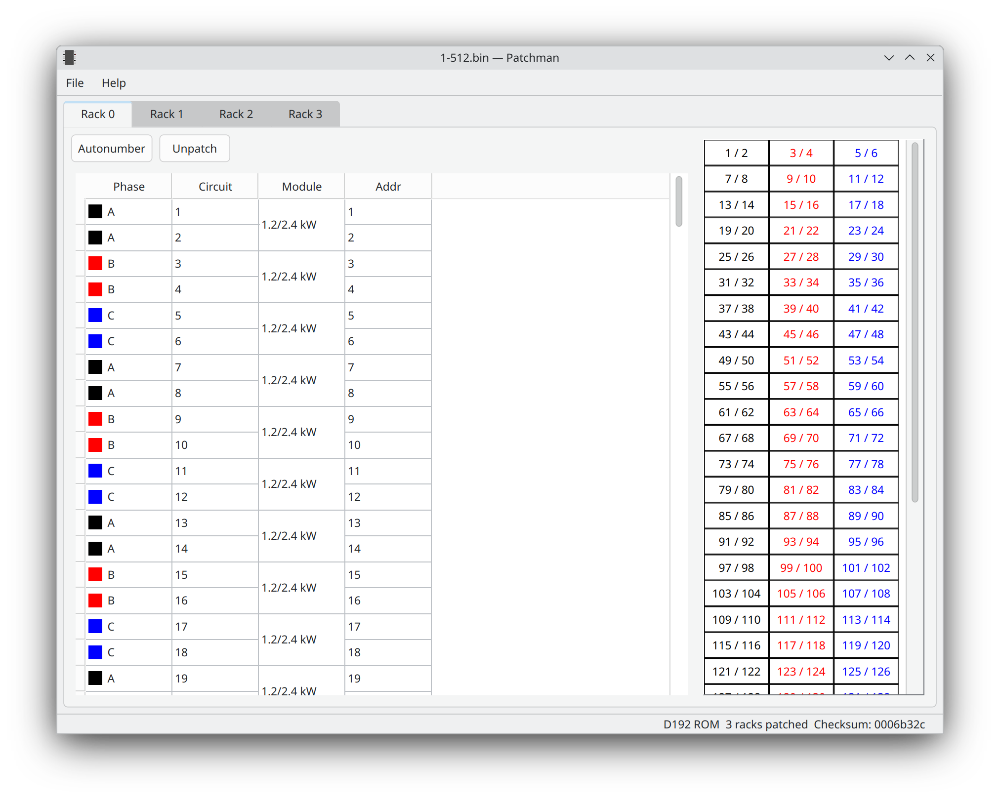
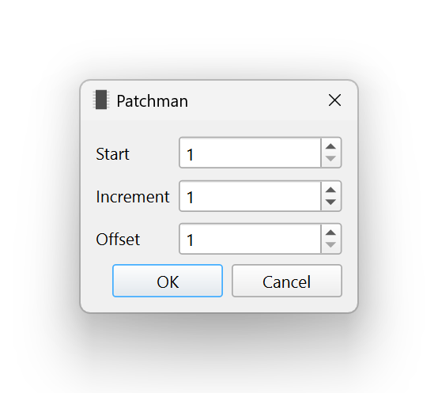

Editor#
The Editor window displays the contents of a patch ROM and allows for changing the addressing of individual circuits.
Each rack available in the ROM is shown as a tab across the top. Each circuit’s phase, circuit number, module type, and DMX address is shown in the table. Only the address is editable. Click on a column header to sort the table by that column. The status bar at the bottom of the window shows the ROM type, number of racks with patch information, and ROM checksum.
Note
The module type is not stored in the patch ROM file. Instead, it is guessed based on contextual information from the circuit addressing.
The Autonumber and Unpatch buttons at the top will bulk- edit the selected rows, or all rows if none are selected.
To unpatch a circuit, set its address to 0 or press the Unpatch
button.
Autonumber#
The Autonumber dialog makes addressing racks fast.
- Start
The first row selected (or the first circuit in the rack, if no rows are selected) will have this address.
- Increment
Add this amount to the address for each row when addressing. For example, with a Start of
97and an Increment of2, circuits are addressed as 97, 99, 101, 103…- Offset
Skip this many circuits in the selection when addressing. This is useful for single and half-density modules. For example, to populate the selected rows with 6kW modules that use only the first of the two circuits in the slot, select the desired rows to patch and set the Offset to
2.